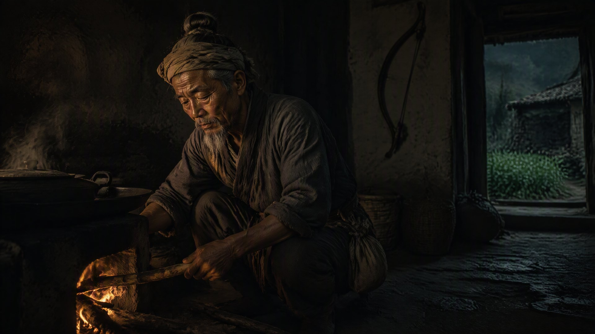

灶田岁月

火焱老了。
他自己也没想到，自己会有这么一天——安安静静地老去。没有刀口，没有火海，没有三方势力同时盯着的那口灶。就只是老了。头发白了大半，背有点驼，蹲在灶前添柴的时候，膝盖会响。
可日子是真好。
火家的田，种了。义学，办到了第十二间。孩子们读书声从早到晚。火焱每天清早起来，第一件事还是去老屋那口灶前，添一把柴，把火拨旺。这习惯他从九岁保持到了如今，一天没断过。
“爷爷，您又烧火了。”一个半大的少年跑进来，是火焱的孙子火承，十四岁，眉眼跟他爹小时候一模一样，可性子比他爹静，“先生说了，读书人不能老蹲在灶房，有辱斯文。”
“放屁。”火焱头也不抬，“先生还说'一屋不扫何以扫天下'呢。灶都烧不好，读什么书。”
火承被噎得没话说，乖乖蹲下来，跟着爷爷添柴。火焱一边拨火，一边教他：“看火候。这火，添柴添急了，就闷；添慢了，就灭。要顺着火势来——做人做事，也是一样的理。读书，也不能一味地猛，得顺着自己的性子，一点点地来。”
“爷爷，”火承忽然说，“您当年，也是这样教爹的吗？”
“你爹啊，”火焱笑了，“他小时候可没你这么听话。让他看火，他能把眉毛燎了。”
祖孙俩蹲在灶前，一老一小，火光把两张脸映得暖烘烘的。灶上是海妹前儿送来的新米，煮着，咕嘟咕嘟地冒泡，满屋子都是米香。
这一年，火承考中了秀才。
消息传回百曲，全村都轰动了——火家出了一个秀才！这是百曲开村以来，第一个有功名的人。义学的冯先生（冯参将的族叔，已经九十多岁了）高兴得直抹眼泪，颤巍巍地说：“火家，成了。火家，成了读书人家了。”
火焱却把火承叫到跟前，脸上没有半点喜色。他问了一句：“中了秀才，你打算怎么办？”
“明年去应天府，考举人。”火承说，眼睛亮亮的。
“考举人之后呢？”
“考进士，做官，光宗耀祖。”
火焱沉默了。他蹲在灶前，往灶膛里添了根柴，火光一跳一跳的。
“承儿，”他缓缓地说，“火家有条祖训，你记不记得？”
“记得。”火承低声说，“火家子孙，永世不得入京，不得为官，不得领兵。”
“那你还考举人，考进士？”
“爷爷，”火承抬起头，眼里有倔强，“朝廷的旨意，是不得入京做官。可孙儿读书，不是为了做官。孙儿是想让天下人知道——火家，不只会烧灶，也会读书。”
火焱看着这个孙子，看了很久。他忽然笑了，笑得眼角的皱纹都舒展开来。
“好。”他说，“读书不为做官，只为明理。你有这个心，爷爷就放心了。去考。考得上，光耀门楣；考不上，回来种田，爷爷也不怪你。”
火承重重地点了点头。
那年秋天，火承去应天府赴乡试。火焱送他到百曲渡口，看着他上了船。船开出老远，火承还站在船尾，朝岸上挥手。
火焱站在渡口，看着船影一点点消失在江面上。他忽然想起了自己——二十多年前，他也是从这个渡口出发，去的应天府，去见的朱元璋。
那时候他背着一把弓，怀里揣着三张牌。
如今，他的孙子，背着一箱书，怀里揣着的是火家的脸面。
“海妹，”火焱对身边的老妇说，“你说，火承这一去，能考上吗？”
“能。”海妹说，她如今也满头白发了，可那双眼睛还是亮的，“火家的孩子，错不了。”
日子还是照样过。火承走后，火焱每天去义学，给那些没去赶考的孩子讲书，讲火候，讲“灶火为证，方可归汉”的来历。孩子们围着他，听得入神。
有一天，一个孩子问：“火爷爷，您以前真的是个'海路大使'吗？我爷爷说，火家以前有九条大船，能跑到日本去。”
火焱笑了笑，摸了摸那孩子的头：“以前的事，都是以前了。现在，火家就是百曲的种田人，读书人。船，没了；官，没了；可火家的火，还在。”
“那火家的火，到底是什么呀？”
火焱蹲下来，指指身后的老灶，又指指义学的书，最后指指自己的心口：“是灶。是书。是心。火家的火，就是——不管走到哪儿，都记得自己是从哪口灶里出来的。”
那年冬天，火承回来了。他中了举人。
可他没有去考进士。他回到百曲，把举人的文书往火焱面前一放，说：“爷爷，孙儿考完了。这举人，是给火家争的——证明火家会读书。可孙儿不去做官。孙儿回来，陪您守灶，教书。”
火焱看着那纸文书，看着眼前这个懂事的孙子，眼眶忽然就湿了。
“好。”他说，“好孩子。火家的火，交到你手里，爷爷放心了。”
窗外，天又飘起了雪。义学的书声、灶膛的火声、田里的风声，混在一起，安安稳稳地响着。
火焱知道，火家这辈子，最大的福气，就是能这样——平平静静地，把日子过下去。
可他也知道，天下没有永远的平静。
腊月里，一个从北边逃难来的商贩，带回来一个消息：燕王朱棣，在北平起兵了。打着“靖难”的旗号，兵锋直指应天府。
天下，又要乱了。
火焱蹲在灶前，把火拨得比往常更旺了些。
他抬头看了看挂在墙上的黑弓——弓弦松了，落了薄薄一层灰。
“老伙计，”他轻声说，“这天下的事，又来了。可火家，这次只守着灶。谁来，火家都是百曲的种田人。”
灶火，赤红赤红地跳着，映着墙上那把蒙尘的弓。
· 第五卷《祖境》 ·